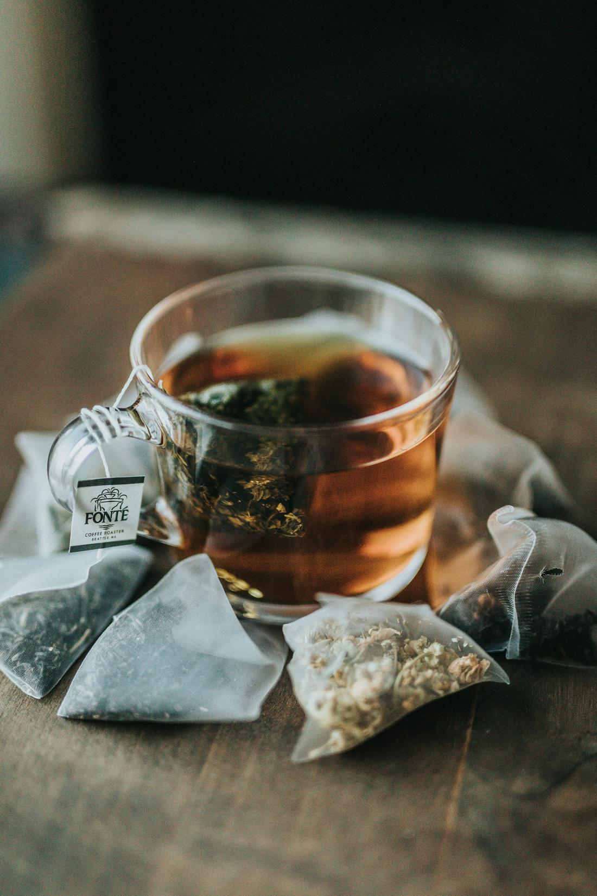

Detoxification & healing with homeopathy
What does ‘detox’ really mean? Vinita looks at how the body clears waste every day — through the liver, kidneys, gut, lungs and skin — and the gentle habits and homeopathic thinking that support it.
Read the article →